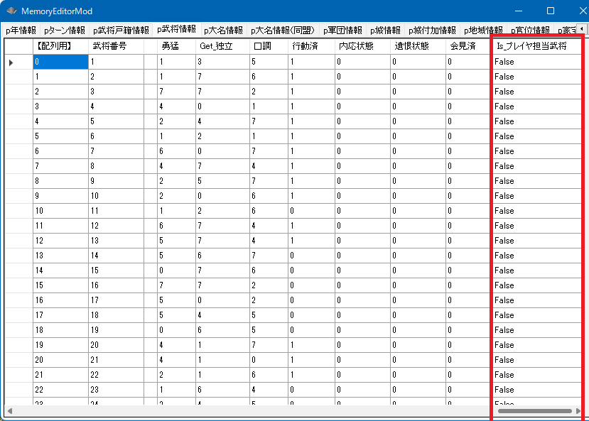

プレイヤ担当
- プレイヤが担当する大名
- プレイヤ担当する大名の麾下の軍団
- プレイヤが担当する大名の麾下の武将

これらを特別視してプログラムすることは、ScenarioModでは非常に多いと言えます。
このため、これらを判定しやすい関数が用意されています。
プレイヤ担当大名、プレイヤ担当軍団、プレイヤ担当武将
bool Is_プレイヤ担当大名(WORD 大名番号【配列用】)
bool Is_プレイヤ担当軍団(WORD 軍団番号【配列用】)
bool Is_プレイヤ担当武将(WORD 武将番号【配列用】)
より詳細を知るには...
「プレイヤ担当」に関する主な所は以上となります。
詳しくは「軍団情報型.h」などを参照してください。